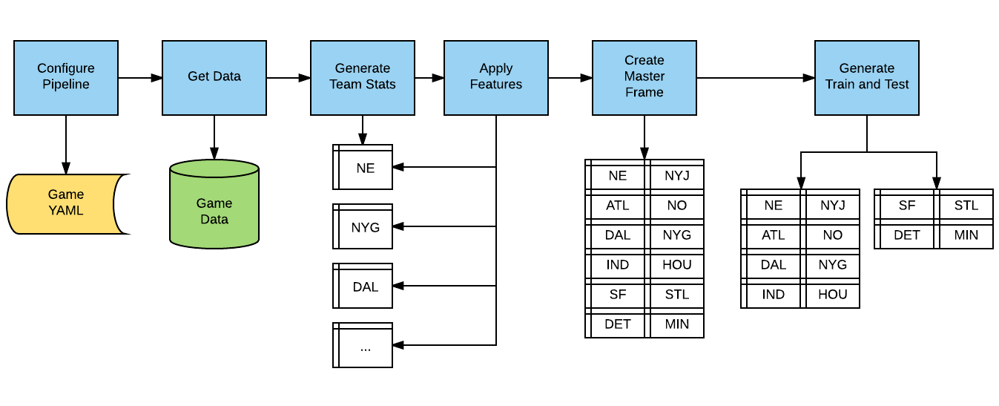

SportFlow
{kind=link}
SportFlow applies machine learning algorithms to predict game outcomes for matches in any team sport. We created binary features (for classification) to determine whether or not a team will win the game or even more importantly, cover the spread. We also try to predict whether or not a game’s total points will exceed the over/under.
Of course, there are practical matters to predicting a game’s outcome. The strength of supervised learning is to improve an algorithm’s performance with lots of data. While major-league baseball has a total of 2,430 games per year, pro football has only 256 games per year. College football and basketball are somewhere in the middle of this range.
The other complication is determining whether or not a model for one sport can be used for another. The advantage is that combining sports gives us more data. The disadvantage is that each sport has unique characteristics that could make a unified model infeasible. Still, we can combine the game data to test an overall model.
Data Sources
SportFlow starts with minimal game data (lines and scores) and expands these data into temporal features such as runs and streaks for all of the features. Currently, we do not incorporate player data or other external factors, but there are some excellent open-source packages such as BurntSushi’s nflgame Python code. For its initial version, SportFlow game data must be in the format below:
season |
date |
away.team |
away.score |
home.team |
home.score |
line |
over_under |
2015 |
2015-11-13 |
COLO |
62 |
ISU |
68 |
-10 |
151 |
2015 |
2015-11-13 |
SDAK |
69 |
WRST |
77 |
-6.5 |
136 |
2015 |
2015-11-13 |
WAG |
57 |
SJU |
66 |
-5.5 |
142 |
2015 |
2015-11-13 |
JVST |
83 |
CMU |
89 |
-18 |
142.5 |
2015 |
2015-11-13 |
NIAG |
50 |
ODU |
67 |
-18 |
132 |
2015 |
2015-11-13 |
ALBY |
65 |
UK |
78 |
-20 |
132.5 |
2015 |
2015-11-13 |
TEM |
67 |
UNC |
91 |
-9.5 |
145 |
2015 |
2015-11-13 |
NKU |
61 |
WVU |
107 |
-23.5 |
147.5 |
2015 |
2015-11-13 |
SIE |
74 |
DUKE |
92 |
-24 |
155 |
2015 |
2015-11-13 |
WCU |
72 |
CIN |
97 |
-20 |
132 |
2015 |
2015-11-13 |
MSM |
56 |
MD |
80 |
-21.5 |
140 |
2015 |
2015-11-13 |
CHAT |
92 |
UGA |
90 |
-10.5 |
136 |
2015 |
2015-11-13 |
SEMO |
53 |
DAY |
84 |
-19 |
140 |
2015 |
2015-11-13 |
DART |
67 |
HALL |
84 |
-11 |
136 |
2015 |
2015-11-13 |
CAN |
85 |
HOF |
96 |
-10.5 |
150.5 |
2015 |
2015-11-13 |
JMU |
87 |
RICH |
75 |
-9 |
137.5 |
2015 |
2015-11-13 |
EIU |
49 |
IND |
88 |
-25 |
150 |
2015 |
2015-11-13 |
FAU |
55 |
MSU |
82 |
-23.5 |
141 |
2015 |
2015-11-13 |
SAM |
45 |
LOU |
86 |
-23 |
142 |
2015 |
2015-11-13 |
MIOH |
72 |
XAV |
81 |
-15.5 |
144.5 |
2015 |
2015-11-13 |
PRIN |
64 |
RID |
56 |
1 |
137 |
2015 |
2015-11-13 |
IUPU |
72 |
INST |
70 |
-8 |
135.5 |
2015 |
2015-11-13 |
SAC |
66 |
ASU |
63 |
-18 |
144 |
2015 |
2015-11-13 |
AFA |
75 |
SIU |
77 |
-5.5 |
131 |
2015 |
2015-11-13 |
UNCO |
72 |
KU |
109 |
-29 |
147.5 |
2015 |
2015-11-13 |
BALL |
53 |
BRAD |
54 |
3 |
135 |
2015 |
2015-11-13 |
USD |
45 |
USC |
83 |
-12.5 |
140 |
2015 |
2015-11-13 |
UTM |
57 |
OKST |
91 |
-12 |
141.5 |
2015 |
2015-11-13 |
COR |
81 |
GT |
116 |
-17 |
130 |
2015 |
2015-11-13 |
MOST |
65 |
ORU |
80 |
-4.5 |
133.5 |
2015 |
2015-11-13 |
DREX |
81 |
JOES |
82 |
-9.5 |
127.5 |
2015 |
2015-11-13 |
WMRY |
85 |
NCST |
68 |
-12.5 |
149 |
2015 |
2015-11-13 |
SF |
78 |
UIC |
75 |
1.5 |
148.5 |
2015 |
2015-11-13 |
PEAY |
41 |
VAN |
80 |
-24.5 |
144 |
2015 |
2015-11-13 |
CSN |
71 |
NIU |
83 |
-9.5 |
134.5 |
2015 |
2015-11-13 |
UCSB |
60 |
OMA |
59 |
-2.5 |
157.5 |
2015 |
2015-11-13 |
UTSA |
64 |
LOYI |
76 |
-14 |
138.5 |
2015 |
2015-11-13 |
BRWN |
65 |
SPU |
77 |
-2 |
130.5 |
2015 |
2015-11-13 |
NAU |
70 |
WSU |
82 |
-10.5 |
145 |
The SportFlow logic is split-apply-combine, as the data are first split along team lines, then team statistics are calculated and applied, and finally the team data are inserted into the overall model frame.
Domain Configuration
The SportFlow configuration file is minimal. You can simulate random scoring to compare with a real model. Further, you can experiment with the rolling window for run and streak calculations.
sport:
points_max : 100
points_min : 50
random_scoring : False
seasons : []
rolling_window : 3
points_max:Maximum number of simulated points to assign to any single team.
points_min:Minimum number of simulated points to assign to any single team.
random_scoring:If
True, assign random point values to games [Default:False].seasons:The yearly list of seasons to evaluate.
rolling_window:The period over which streaks are calculated.
Model Configuration
SportFlow runs on top of AlphaPy, so the model.yml file has
the same format.
project:
directory : .
file_extension : csv
submission_file :
submit_probas : False
data:
drop : ['Unnamed: 0', 'index', 'season', 'date', 'home.team', 'away.team',
'home.score', 'away.score', 'total_points', 'point_margin_game',
'won_on_points', 'lost_on_points', 'cover_margin_game',
'lost_on_spread', 'overunder_margin', 'over', 'under']
features : '*'
sampling :
option : False
method : under_random
ratio : 0.0
sentinel : -1
separator : ','
shuffle : False
split : 0.4
target : won_on_spread
target_value : True
model:
algorithms : ['RF', 'XGB']
balance_classes : False
calibration :
option : False
type : isotonic
cv_folds : 3
estimators : 201
feature_selection :
option : False
percentage : 50
uni_grid : [5, 10, 15, 20, 25]
score_func : f_classif
grid_search :
option : True
iterations : 50
random : True
subsample : False
sampling_pct : 0.25
pvalue_level : 0.01
rfe :
option : True
step : 5
scoring_function : 'roc_auc'
type : classification
features:
clustering :
option : False
increment : 3
maximum : 30
minimum : 3
counts :
option : False
encoding :
rounding : 3
type : factorize
factors : ['line', 'delta.wins', 'delta.losses', 'delta.ties',
'delta.point_win_streak', 'delta.point_loss_streak',
'delta.cover_win_streak', 'delta.cover_loss_streak',
'delta.over_streak', 'delta.under_streak']
interactions :
option : True
poly_degree : 2
sampling_pct : 5
isomap :
option : False
components : 2
neighbors : 5
logtransform :
option : False
numpy :
option : False
pca :
option : False
increment : 3
maximum : 15
minimum : 3
whiten : False
scaling :
option : True
type : standard
scipy :
option : False
text :
ngrams : 1
vectorize : False
tsne :
option : False
components : 2
learning_rate : 1000.0
perplexity : 30.0
variance :
option : True
threshold : 0.1
pipeline:
number_jobs : -1
seed : 13201
verbosity : 0
plots:
calibration : True
confusion_matrix : True
importances : True
learning_curve : True
roc_curve : True
xgboost:
stopping_rounds : 30
Creating the Model
First, change the directory to your project location, where you have already followed the Project Structure specifications:
cd path/to/project
Run this command to train a model:
sflow
Usage:
sflow [--train | --predict] [--tdate yyyy-mm-dd] [--pdate yyyy-mm-dd]
- --train
Train a new model and make predictions (Default)
- --predict
Make predictions from a saved model
- --tdate
The training date in format YYYY-MM-DD (Default: Earliest Date in the Data)
- --pdate
The prediction date in format YYYY-MM-DD (Default: Today’s Date)
Running the Model
In the project location, run sflow with the predict flag.
SportFlow will automatically create the predict.csv file using
the pdate option:
sflow --predict [--pdate yyyy-mm-dd]